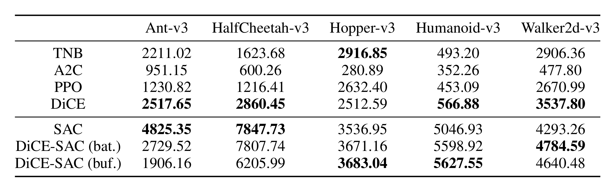
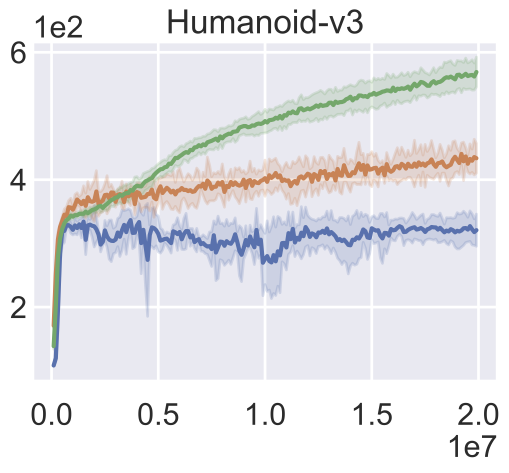
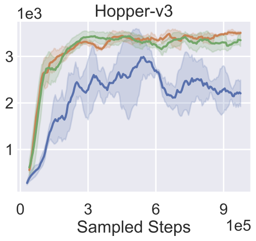
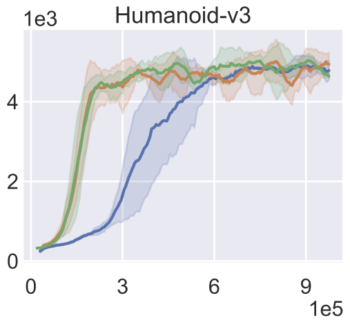
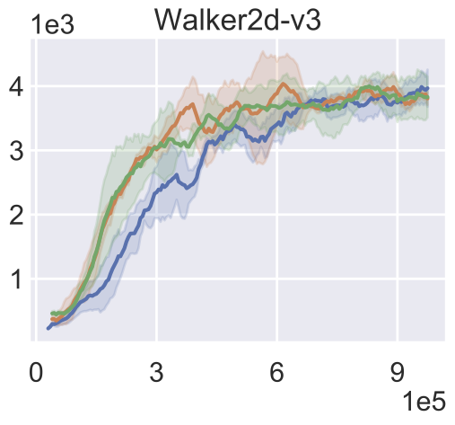

Non-local Policy Optimization via
Diversity-regularized Collaborative Exploration
Diversity-regularized Collaborative Exploration
The Chinese University of Hong Kong
Working together in a team towards a common goal makes life easier. However, in most of the existing Reinforcement Learning (RL) algorithms, usually only one agent or a global agent with several replicas explore the environment and learn to solve the task. The agent usually limits its exploration within a small region of the state-action space due to the initialization and previous experience, as illustrated by the light area in the above figure, which we called the local exploration problem.
We address the local exploration problem with a new policy optimization framework called Diversity-regularized Collaborative Exploration (DiCE). DiCE combines the Collaborative Exploration (CE) that maintains a team of agents and shares knowledge across multiple agents as well as the Diversity Regularization (DR) that directs the exploration of each agent and maintains the diversity among them. DiCE is implemented in both on-policy and off-policy settings and is compared with baselines e.g. PPO and SAC. The experimental results show that DiCE outperforms both on-policy and off-policy baselines in most cases in the MuJoCo locomotion benchmarks.
|  |
 |
 |
 |
 |  |
 |
 |
 |  |  |
@article{peng2020nonlocal,
title={Non-local Policy Optimization via Diversity-regularized Collaborative Exploration},
author={Peng, Zhenghao and Sun, Hao and Zhou, Bolei},
journal={arXiv preprint arXiv:2006.07781},
year={2020}
}